第31章 用 Onshape 建校准件并完成切片
先做一块可回改尺寸的校准板，再导出封闭 STL 并生成 MK4 的打印文件。本课只完成数字阶段。
实物打印与测量仍未验收。
问题
M11 要自己构建结构与外壳。直接画鸭子零件会把外形、配合和打印误差混在一起。
先用一块 40×30×5 mm 的板练完整路径。板上有三个通孔、外侧圆角和孔口倒角。它不是鸭子的任何部位，而是校准件。
最终要得到 calibration-plate.stl、.3mf 和 .bgcode。还要验证改板宽时，孔位保持不动。
背景
原项目使用 Onshape。本课也用它，在 Linux 浏览器中操作。Onshape Free 可用于非商业项目，但文档公开，不要放入私密设计。
| 名称 | 本课中的最小含义 |
|---|---|
| Document | 一个 CAD 项目的顶层容器，本课名为 microduck-m11a-calibration |
| Workspace | Document 中当前可编辑的工作区，保存建模历史与单位设置 |
| PartStudio | 在 Workspace 内创建和编辑零件的工作页 |
| Assembly | 把多个零件按位置与运动关系装起来的工作页，本课不用 |
| Sketch | 在平面或实体表面绘制的二维轮廓 |
| Feature | 对模型执行的一次操作，例如拉伸、圆角、倒角 |
| Part | Feature 生成的独立实体，本课只有 Part 1 |
层级是 Document → Workspace → PartStudio 或 Assembly。PartStudio 内按顺序保存 Sketch 与 Feature，并生成 Part。Assembly 引用零件，不负责画出这块板。
草图工具分三类。几何工具画线、矩形和圆。
尺寸工具给长度与直径。
约束工具固定位置与几何关系。尺寸回答“多大”，约束回答“相对谁、保持什么关系”。
常见约束如下。
| 约束 | 作用 |
|---|---|
| Coincident | 让点重合，或让点落在曲线上 |
| Horizontal / Vertical | 让线保持水平或竖直 |
| Parallel / Perpendicular | 让两线平行或垂直 |
| Tangent | 让线与圆弧相切 |
| Equal | 让同类几何保持等长或等径 |
| Concentric | 让圆或圆弧共用圆心 |
| Midpoint / Symmetric | 固定中点，或让对象关于参照对称 |
| Fix | 固定对象的位置与转角，慎用，容易限制后续修改 |
后续实体工具也有明确分工。拉伸、旋转、扫掠和放样生成实体。
圆角与倒角处理细节。
阵列复制特征。
布尔工具合并、切除或保留交集。
基准面、基准轴和点提供参照。
Mate 等工具负责装配。
测量、质量属性与导出负责检查输出。
设计
这条路径把外形尺寸留在草图里，把厚度与细节留在 Feature 里。回改尺寸时，Onshape 按历史重算模型。
校准件的结构
底板宽 40 mm、深 30 mm、厚 5 mm。矩形中心固定在 Origin，避免改宽时整体向一侧移动。
顶面有三个通孔。中间孔 Ø6 mm，圆心在 Origin。左孔 Ø4 mm，右孔 Ø5 mm，圆心距 Origin 都是 12 mm，并与 Origin 水平对齐。
四条外侧竖边做 2 mm 圆角。三个孔的顶部边缘做 0.5 mm 倒角。
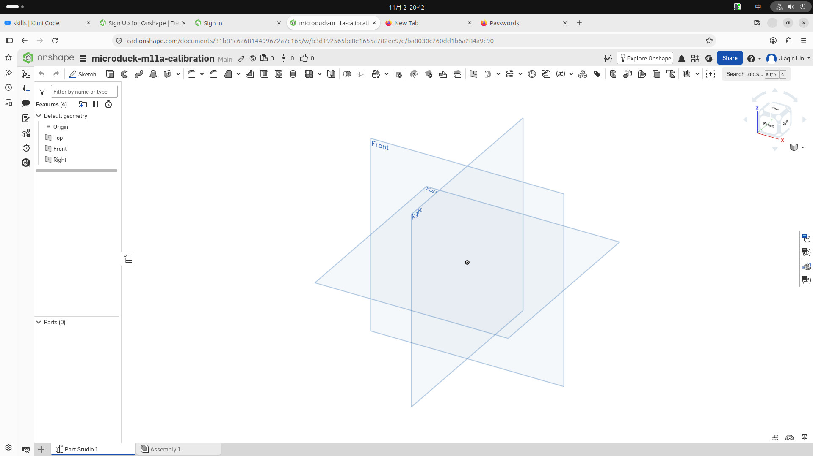
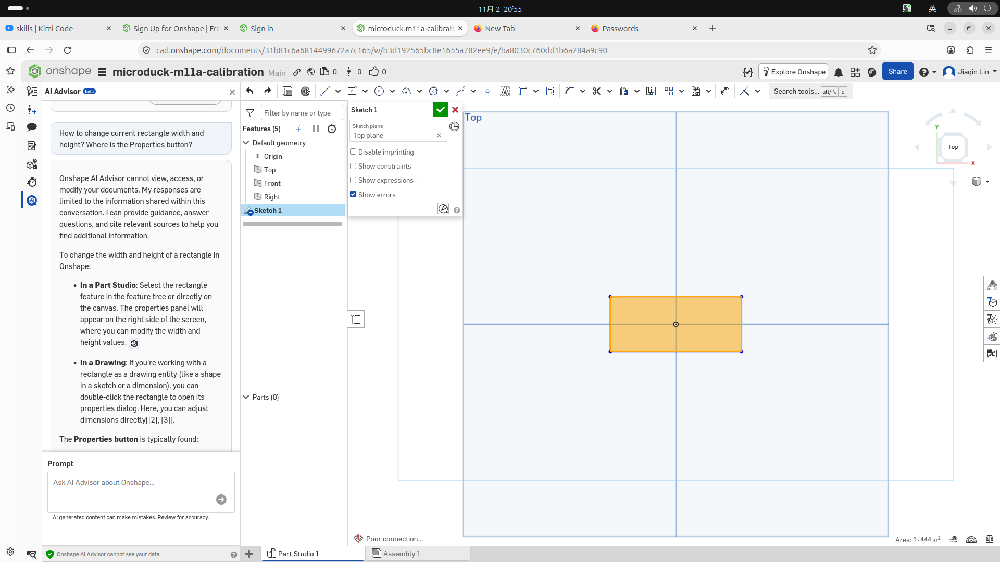
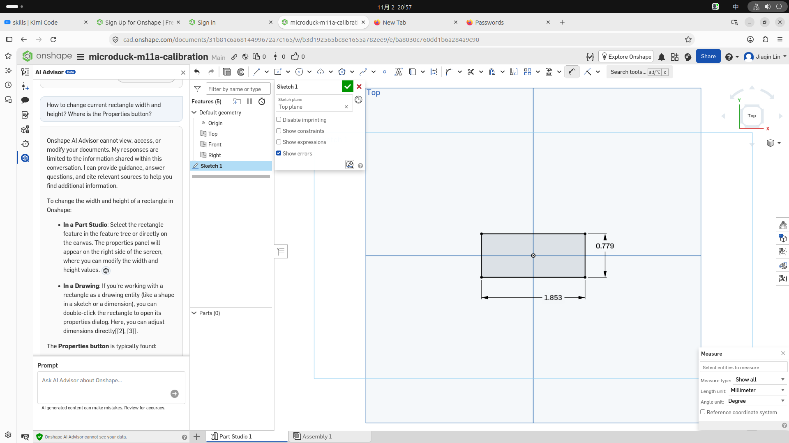
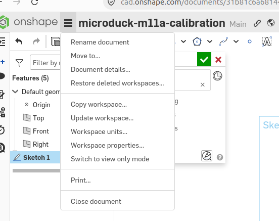
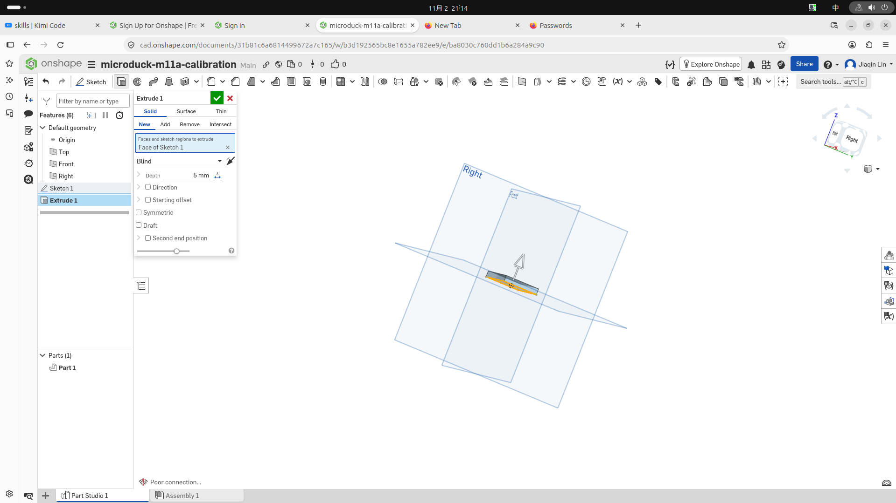
Extrude 选项怎么选
Extrude 把封闭草图区域变成实体，或用它修改已有实体。本课基体选 Solid / New / Blind，切孔选 Solid / Remove / Through all。
| 选项组 | 选项 | 含义 |
|---|---|---|
| 生成类型 | Solid | 生成或修改实体 |
| 生成类型 | Surface | 只生成曲面，没有实体厚度 |
| 生成类型 | Thin | 把轮廓拉成指定壁厚的薄壁 |
| 实体关系 | New | 新建独立 Part |
| 实体关系 | Add | 并入已有实体 |
| 实体关系 | Remove | 从已有实体切除 |
| 实体关系 | Intersect | 只保留与已有实体的交集 |
| 终止方式 | Blind | 按指定 Depth 拉伸 |
| 终止方式 | Up to next | 到遇到的下一个实体面 |
| 终止方式 | Up to face | 到选定面 |
| 终止方式 | Up to part | 到选定 Part |
| 终止方式 | Up to vertex | 到选定点 |
| 终止方式 | Through all | 穿过整个已有实体 |
其他控件按需要出现。Depth 给距离。
Direction 反转方向。
Starting offset 让拉伸起点离开草图面。
Symmetric 向两侧对称拉伸。
Draft 加拔模斜度。
Second end 单独控制另一端。
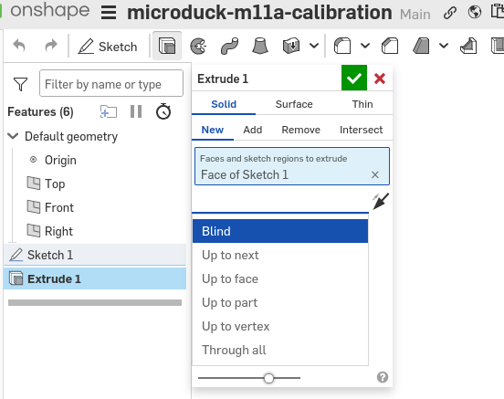
孔、细节与参数化检查
第二个草图建在底板顶面，不再画新的底板。三个圆属于同一 Sketch，因此一次 Extrude 就能切出三孔。
圆角和倒角放在切孔之后。这样选择边时，模型已经接近最终形状。
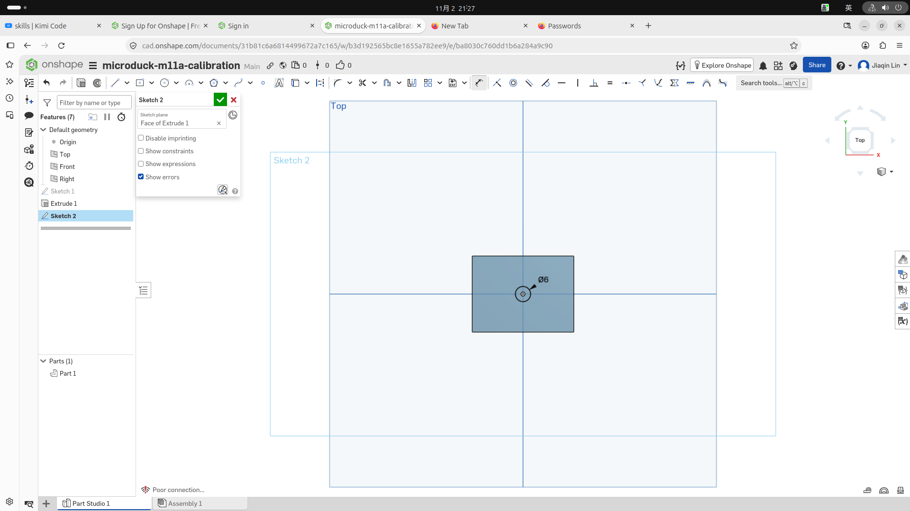
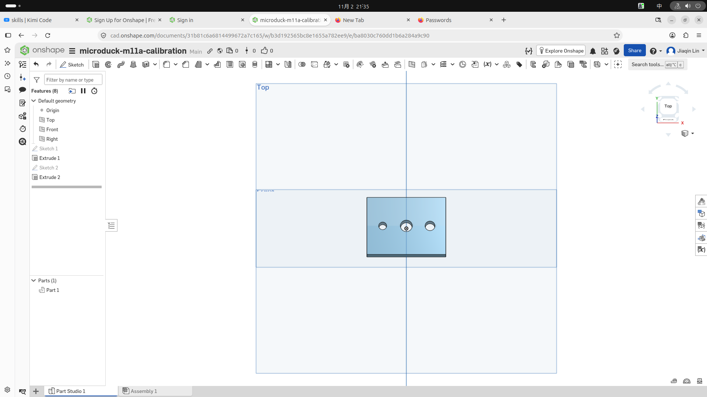
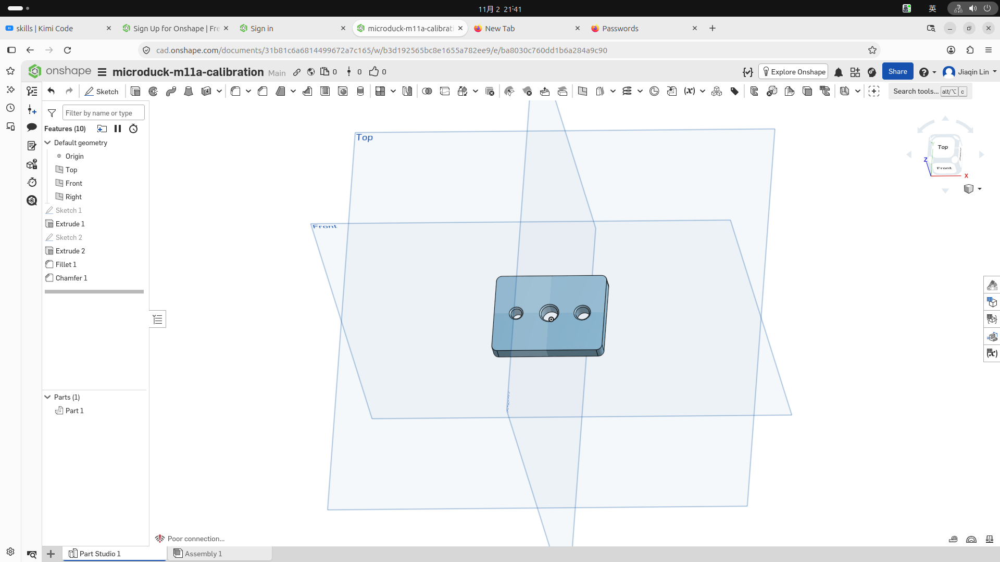
参数化检查不是另画一块板。把 Sketch 1 的宽度从 40 改成 45，再改回 40。预期三个孔的位置不变，Feature 树没有错误。
导出与切片
STL 用三角形描述实体表面，不保留草图、尺寸或 Feature 历史。导出时选 Binary STL、mm、Fine。
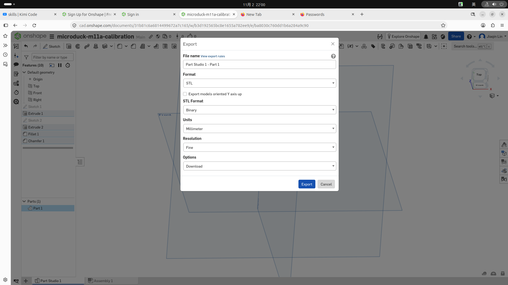
切片器把表面网格转成逐层路径，并按层高、壁数与填充率生成挤出动作。STL 是形状。
切片文件才是某台打印机的制造指令。
本课用 PrusaSlicer 2.7.2。配置是 Original Prusa MK4 Input Shaper 0.4 nozzle、Generic PLA、0.20 mm SPEED、20% infill。模型平放，scale 为 100%，不用 support 或 brim。
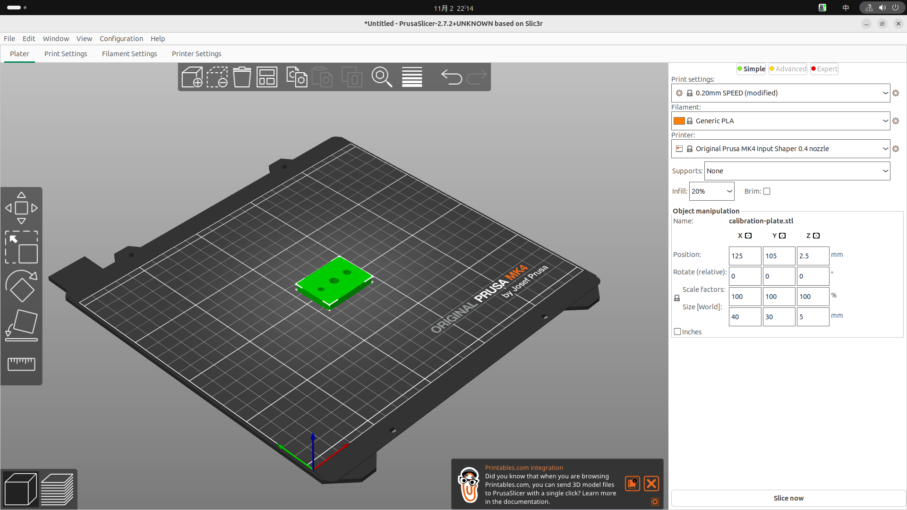
预期得到 25 层，约 10 min，耗材 4.18 g / 1.40 m。切片显示体积 3374.01 mm³，小于实体网格体积 5674.248 mm³，因为内部只有 20% 填充，壁与顶底实心层也不是整块实心。
保存 .3mf 以保留模型和切片配置。导出 .bgcode 供 MK4 使用。bgcode 是 MK4 默认的二进制 G-code，属于正常输出，不要把它当作其他打印机的通用文件。
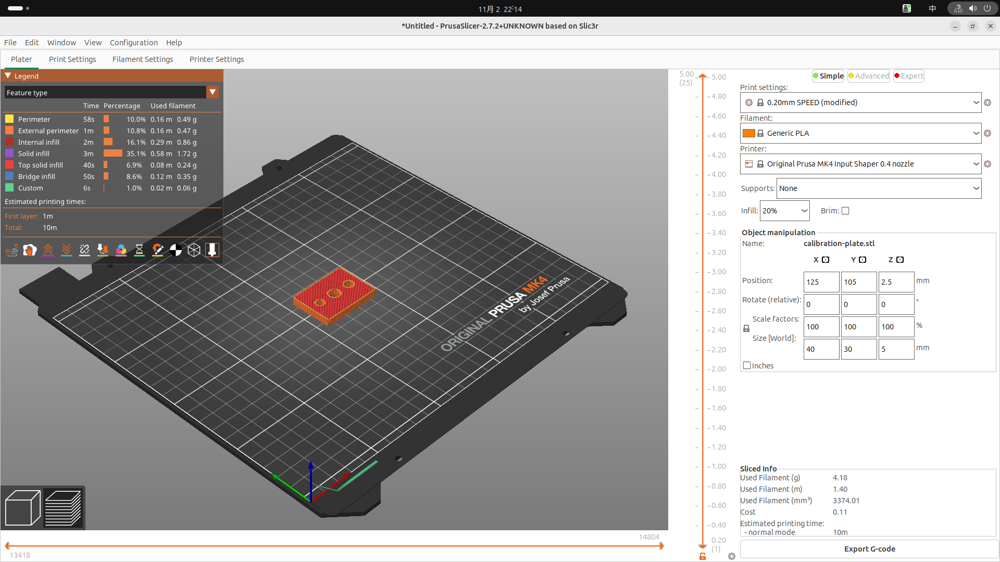
验收
在宿主机用 Linux 浏览器操作 Onshape。在宿主机用 PrusaSlicer 切片。最后在宿主机项目根运行自动断言。
这里只保存与检查数字文件，不宣称实物已通过。
1. 建文档并设置毫米
登录 Onshape，创建 Public Document。
输入名称
microduck-m11a-calibration。打开底部
Part Studio 1。确认左侧有 Origin、Top、Front、Right。
点击左上角 Onshape 图标旁的三横线菜单。
点击
Workspace units，不要用Measure。把长度单位设为
Millimeter。关闭单位面板。
Measure 只改变测量结果的显示单位。Workspace units 才改变当前工作区的建模与输入单位。
2. 画 40×30 mm 底板草图
点击
Sketch，选择Top平面。选择
Center point rectangle。点击
Origin作为矩形中心。拖出矩形并点击对角点。
用
Dimension选择上下横边。输入
40 mm并确认。用
Dimension选择左右竖边。输入
30 mm并确认。检查矩形中心仍在 Origin。
点击绿色勾，完成
Sketch 1。
3. 拉伸 5 mm 基体
点击
Extrude。选择 Sketch 1 的封闭区域。
设置
Solid、New、Blind。输入 Depth
5 mm。保持方向离开 Top 平面，形成正厚度。
保持 Starting offset 为 0，关闭 Symmetric 与 Draft。
点击绿色勾，得到
Extrude 1和Part 1。
4. 在顶面画三个圆
点击
Sketch，选择底板顶面。用
Center point circle在 Origin 画中间圆。用
Dimension标注中间圆为Ø6 mm。在中间圆左侧画第二个圆。
标注左圆为
Ø4 mm。标注左圆心到 Origin 的水平距离为
12 mm。给左圆心与 Origin 添加
Horizontal约束。在中间圆右侧画第三个圆。
标注右圆为
Ø5 mm。标注右圆心到 Origin 的水平距离为
12 mm。给右圆心与 Origin 添加
Horizontal约束。检查三个圆心共线，左右圆各距 Origin 12 mm。
点击绿色勾，完成
Sketch 2。
5. 一次切出三个通孔
点击
Extrude。框选三个圆的区域。
设置
Solid、Remove、Through all。调整 Direction，使箭头指向底板内部。
确认 Merge scope 为
Part 1。点击绿色勾，完成
Extrude 2。旋转视图，确认三个孔都贯穿 5 mm 底板。
6. 加圆角与倒角
点击
Fillet。只选择四条外侧竖边。
输入半径
2 mm并确认。点击
Chamfer。选择三个孔的顶部圆边。
选择等距倒角，输入
0.5 mm。确认不要选孔底边或外侧顶边。
7. 验证参数化回改
在 Feature 树中编辑
Sketch 1。双击宽度
40 mm，改为45 mm。等待模型重算。
确认板宽变为 45 mm，孔位不动。
确认 Feature 树没有红色错误。
再把宽度从
45 mm改回40 mm。确认最终板宽为 40 mm。
8. 导出 STL
在 Parts 列表右键
Part 1。点击
Export。格式选择
STL。选择
Binary，单位选择Millimeter。分辨率选择
Fine。下载文件。
在宿主机仓库根创建目标目录。
mkdir -p exercises/m11a-calibration- 把下载文件放到下面的路径，文件名必须一致。
exercises/m11a-calibration/calibration-plate.stl9. 配置 PrusaSlicer 并切片
用 PrusaSlicer 2.7.2 导入该 STL。
Printer 选
Original Prusa MK4 Input Shaper 0.4 nozzle。Filament 选
Generic PLA。Print settings 选
0.20mm SPEED。Infill 设为
20%。Supports 设为
None。取消
Brim。保持模型平放，XYZ scale 均为
100%。点击
Slice now。检查预览显示
25层。检查模型尺寸仍为
40 × 30 × 5 mm。预期耗时约
10 min。预期耗材约
4.18 g / 1.40 m。用
Save project保存为下面的文件。
exercises/m11a-calibration/calibration-plate.3mf- 点击
Export G-code，保存为下面的文件。
exercises/m11a-calibration/calibration-plate.bgcode看到 .bgcode 不需要改扩展名。它是这台 MK4 配置的正常输出。
10. 检查数字结果
本次实测 STL 有 3192 个三角形。包围尺寸是 40×30×5 mm，Z 范围是 0 到 5 mm。
边界边数为 0，非流形边数为 0。网格体积为 5674.248 mm³。切片显示体积为 3374.01 mm³，差异来自 20% 填充与路径生成。
在宿主机项目根运行自动验收：
bash accept/m11a-b01.sh预期输出：
M11a Bite 1 PASS: 40×30×5mm; 3192 triangles; watertight; STL/3MF/bgcode present这只证明文件与封闭网格通过检查。没有打印机和卡尺时，不检查实际孔径、外形误差或配合。
坑
尺寸显示为英寸时，改 Measure 不会改工作区输入单位。应从左下角齿轮进入 Workspace units。
改宽后若孔跟着移动，先查草图参照。矩形中心应固定在 Origin，孔位也应相对 Origin 标注，不要相对矩形外边标注。
自测
1. 要把后续输入尺寸统一成毫米，应改哪里？
A. Measure 的 Length unit
B. Workspace units
C. STL 导出单位
D. PrusaSlicer 的 scale
答案
B。Measure 只改测量显示。STL 单位和切片缩放也不能替代工作区单位。
2. 一次切出三个贯穿孔，应选哪组 Extrude 设置？
A. Surface / New / Blind
B. Solid / Add / Up to next
C. Solid / Remove / Through all
D. Thin / Intersect / Up to face
答案
C。三个圆属于同一草图，可一次选择。Remove 负责切除，Through all 保证贯穿。
3. 把板宽从 40 改为 45 时，怎样让孔位不动？
A. 孔径改成相同值
B. 以矩形外边标孔距
C. 以 Origin 标孔位并固定矩形中心
D. 先导出 STL 再改宽
答案
C。Origin 是稳定参照。相对外边标注会让孔随板边移动。
4. 为什么切片体积会小于 STL 的实体网格体积？
A. STL 导出时单位错了
B. 20% 填充让内部大部分区域留空
C. 25 层意味着模型变薄
D. bgcode 删除了外壁
答案
B。切片按壁、顶底层和稀疏填充计算耗材，不再把内部当成完充实心体。
5. 保存出的 .bgcode 应怎样处理？
A. 改名成 .stl
B. 当作通用文件交给任意打印机
C. 保留，作为当前 MK4 的二进制 G-code
D. 删除，只保留 .3mf
答案
C。bgcode 是 MK4 默认的二进制 G-code。.3mf 另用于保留项目与切片配置。